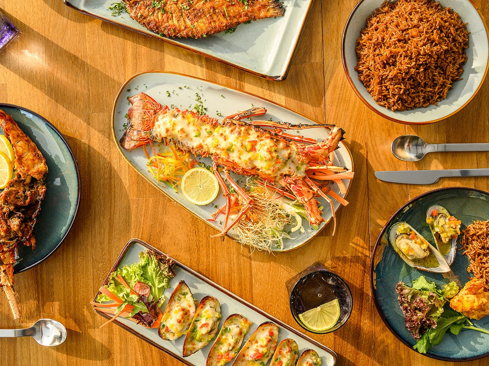

Yanbu’s coastal location has strongly influenced its local cuisine. Seafood is widely enjoyed by residents and visitors, and many dishes reflect traditional cooking styles linked to fishing communities along the Red Sea.
Popular meals are often prepared using fresh daily catch and a mix of spices that highlight local flavors. The food culture in Yanbu also reflects hospitality and family gatherings, where seafood dishes are commonly served.
Popular Seafood Dishes
Sayadiyah (fish with spiced rice)
Grilled Hamour
Fried Shrimp
Mixed Seafood Platter
Calamari
Seafood Soup

Al Marsah Restaurant
Al Marsah is one of the well-known seafood restaurants in Yanbu. It is recognized for offering a variety of seafood dishes and for its welcoming atmosphere that suits families and visitors.
The restaurant represents an example of how Yanbu’s food culture connects daily life with the sea. Many customers choose it for the freshness of its ingredients and the consistent quality of its seafood meals.
The following video presents a short view of selected dishes served at Al Marsah.